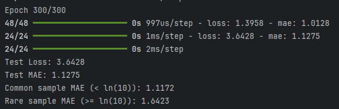
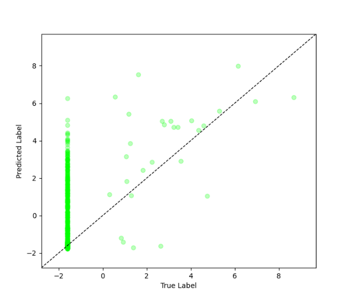
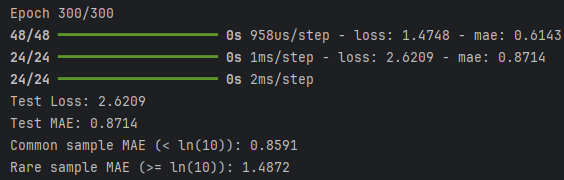
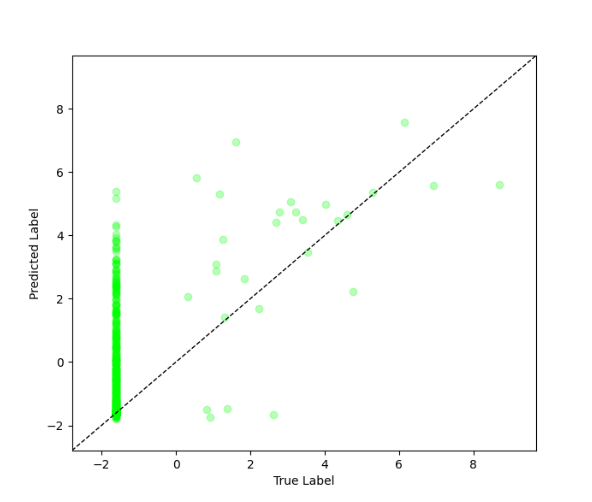

Imbal Balanced Regression Tutorial#
This tutorial demonstrates how to train a neural network for a regression task while addressing data imbalance using density-based sample weighting and the balanced_fit function.
Files Needed#
Full Code: view source code
Train/Test Files: training data, testing data
Before you begin: Use the Tutorial Setup guide as your starting point, then continue with this tutorial.
1. Calculate Sample Densities#
To address imbalance in continuous targets, we estimate label densities.
labels_kde = y_train.reshape(-1).copy()
kde = imbal.regression.fit_kde(labels_kde)
densities = imbal.regression.get_sample_densities(labels_kde, kde)
Explanation#
KDE (Kernel Density Estimation) models the distribution of target values.
Densities measure how common each sample is.
These densities are used during training to emphasize rare samples.
2. Model Compilation and Training#
Compilation#
model.compile(
loss="mean_squared_error",
optimizer="adam",
metrics=["mae"],
)
Training#
max_epochs = 300
batch_size = 32
model.balanced_fit(
x_train,
y_train,
sample_density=densities,
batch_size=batch_size,
epochs=max_epochs,
)
Explanation#
Loss: Mean Squared Error (MSE) for regression tasks.
Metric: Mean Absolute Error (MAE) for interpretability.
balanced_fit uses density-based weighting to better learn from imbalanced target distributions.
3. Results#
Model Evaluation#
results = model.evaluate(x_test, y_test)
loss, mae = results
predictions = model.predict(x_test)
print(f"Test Loss: {loss:.4f}")
print(f"Test MAE: {mae:.4f}")
threshold = np.log(10)
y_true = y_test.reshape(-1)
y_pred = predictions.reshape(-1)
common_mask = y_true < threshold
rare_mask = y_true >= threshold
common_mae = np.mean(np.abs(y_true[common_mask] - y_pred[common_mask]))
rare_mae = np.mean(np.abs(y_true[rare_mask] - y_pred[rare_mask]))
print(f"Common sample MAE (< ln(10)): {common_mae:.4f}")
print(f"Rare sample MAE (>= ln(10)): {rare_mae:.4f}")
Example Output#

4. Visualization#
The model’s predictions are visualized by plotting true values against predicted values to assess performance and highlight rare vs. frequent samples.
imbal.regression.plot_true_vs_predictions(y_test,
predictions,
)
Example Output#

5. Optional: Using Explicit Sample Weights#
Alternatively, you can manually convert the sample densities into training weights and pass those weights to balanced_fit. This gives you more direct control over how strongly rare samples are emphasized during training.
Replace the training call with:
from imbal.regression import reciprocal_importance
weights = reciprocal_importance(densities, alpha=0.8)
model.balanced_fit(
x_train,
y_train,
sample_weight=weights,
batch_size=batch_size,
epochs=max_epochs,
)
Explanation#
reciprocal_importancetransforms the density values into sample weights.Lower-density (rarer) samples receive larger weights.
The
alphaparameter controls how aggressively rare samples are upweighted.This approach is useful when you want more manual control than passing
sample_densitydirectly.
Results#


This optional approach gives you manual control over the weighting strategy, while the default sample_density workflow keeps the training setup simpler.